GALLERIJ
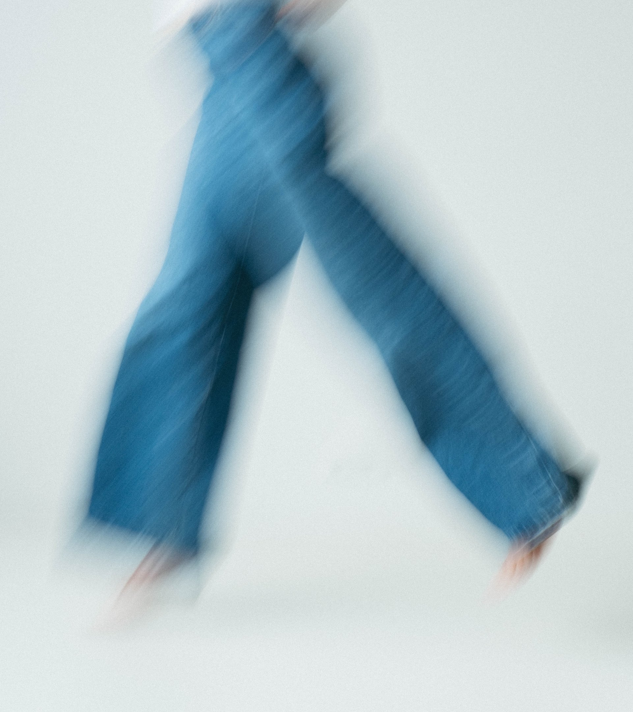
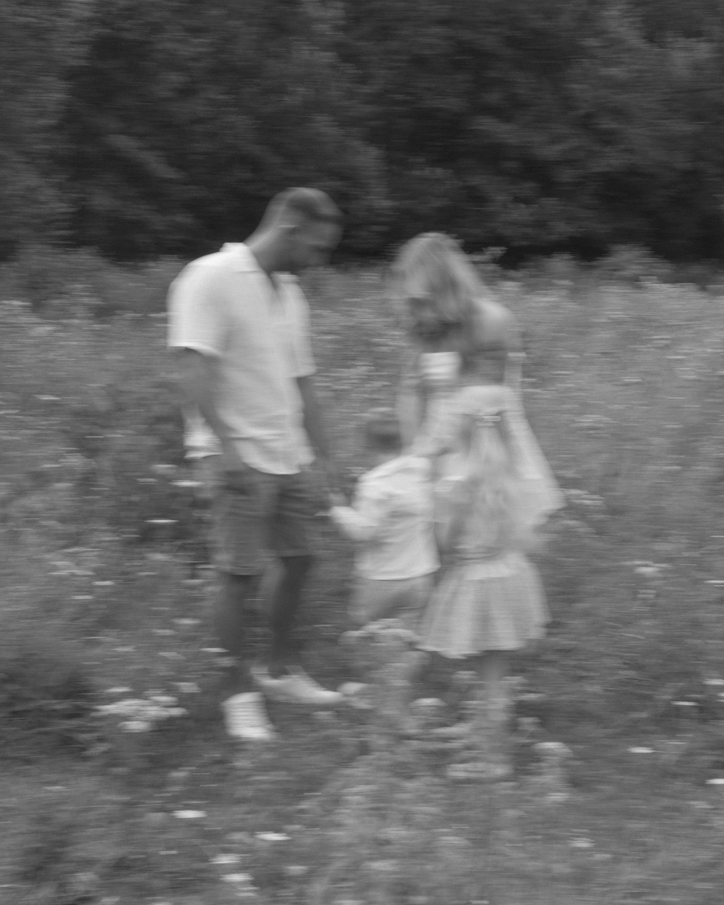
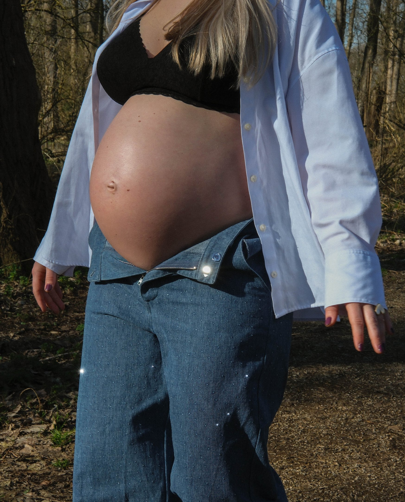
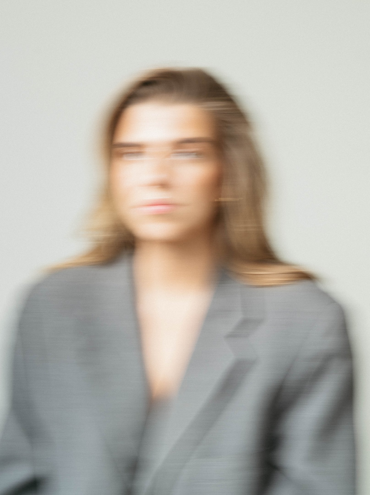
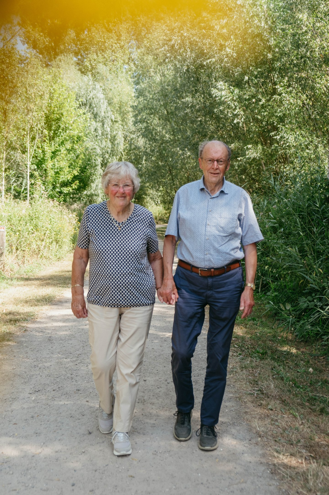
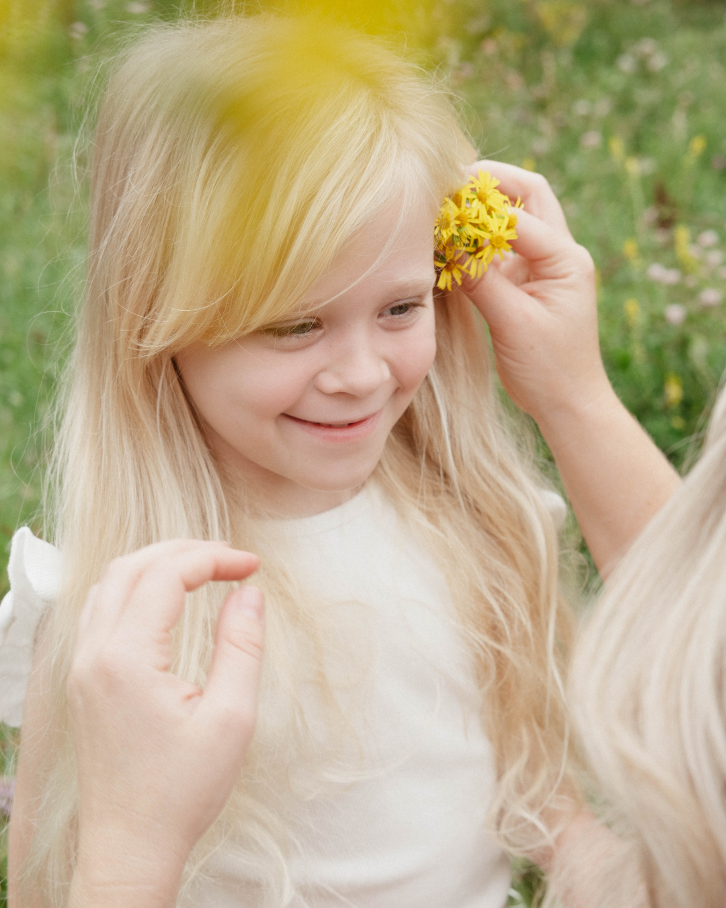
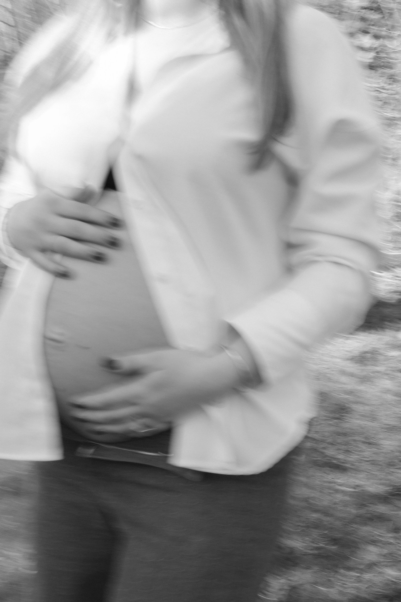
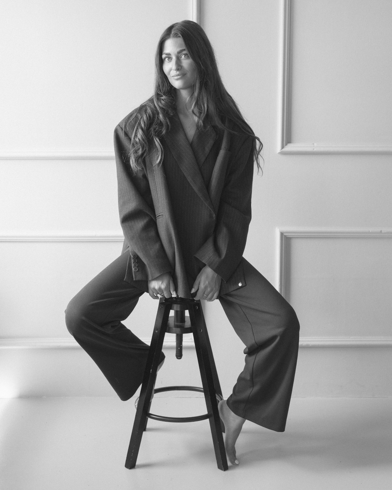
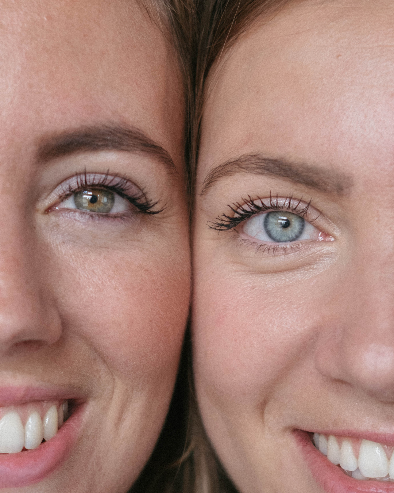
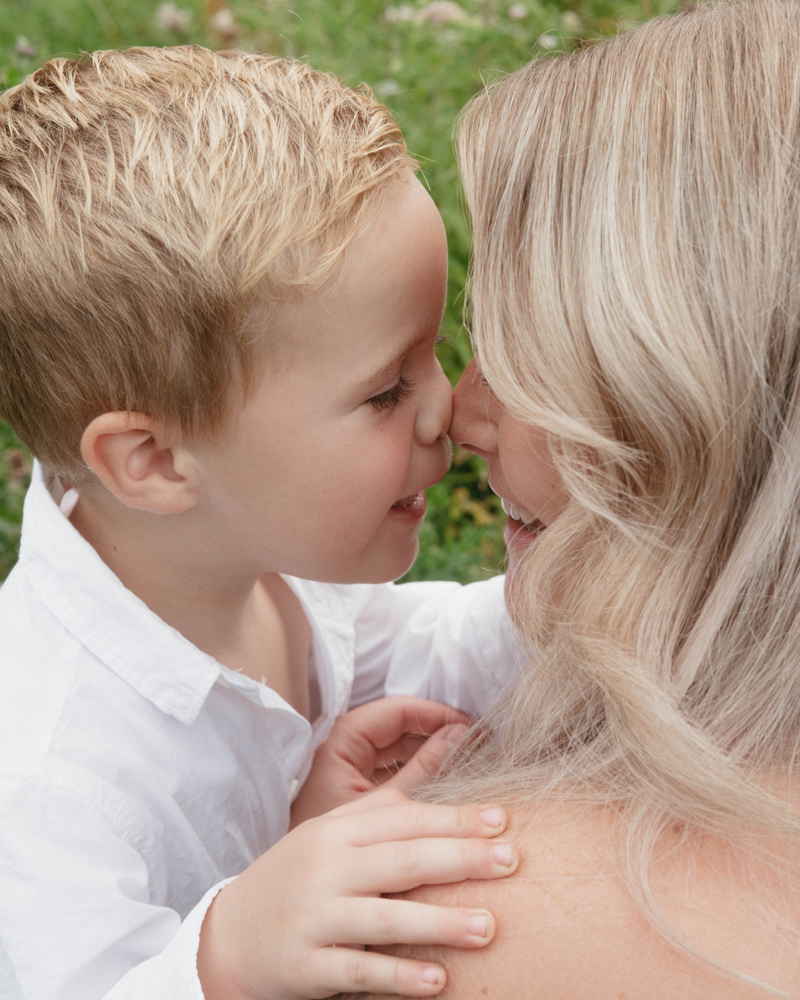
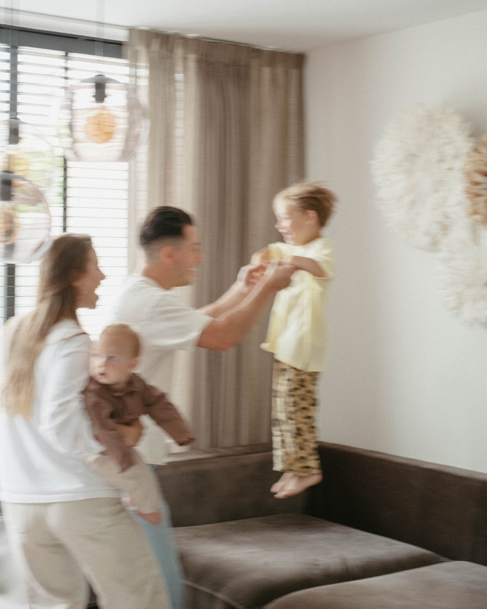
Still filling the gallery....... ;)
SOCIAL MEDIA BEHEER
Geen standaard content maar beelden en ideeën die blijven hangen. Met een creatieve strategie en een flinke dosis karakter zorgen we ervoor dat jouw merk opvalt.
Heeft jouw bedrijf behoefte aan een social media beheerder die nét even anders denkt? Catch me by mail.